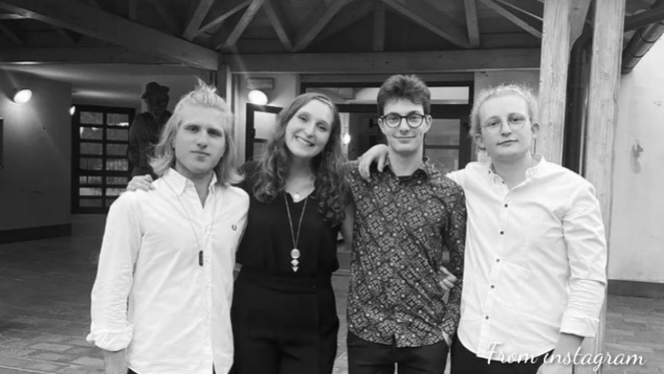
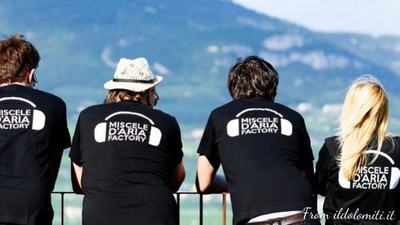
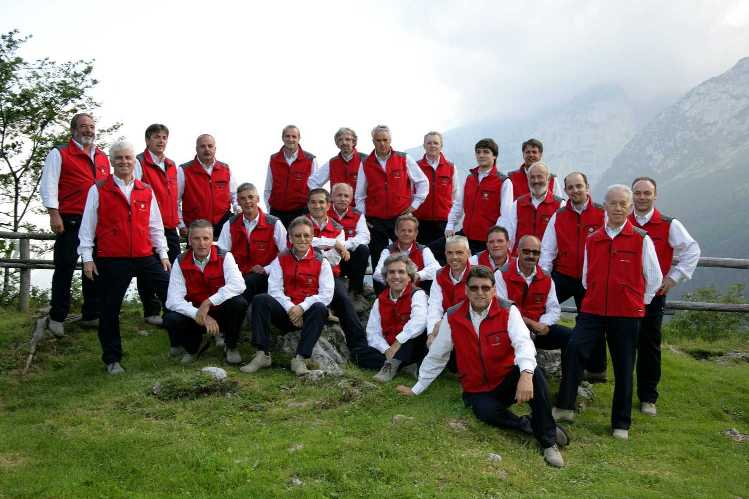
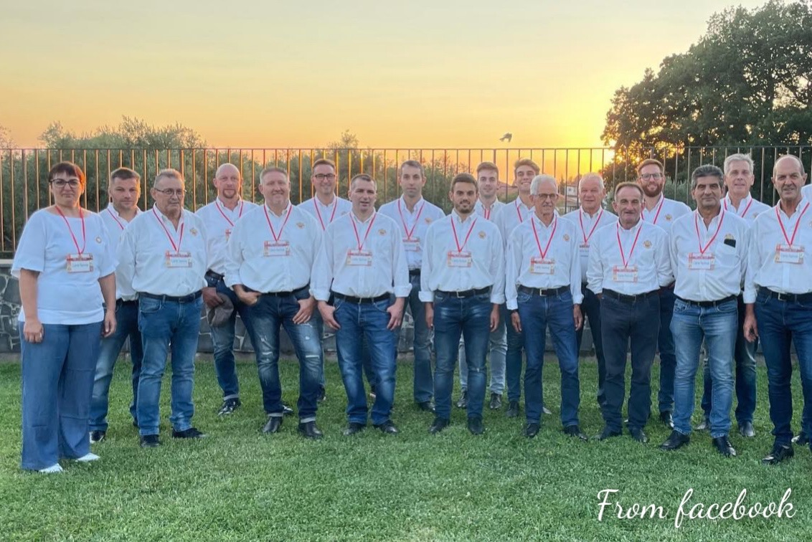
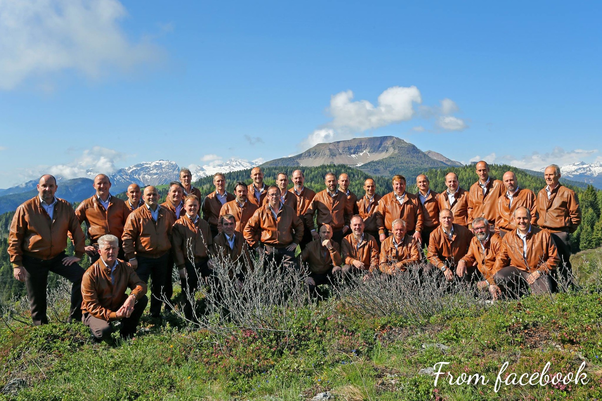

Musica trentina -> Band della Val di Non

Riptide
I Riptide sono un giovane gruppo della Val di Non. Formatasi nel 2021, la band interpreta un vasto repertorio, da canzoni folk a brani inediti, da tormentoni a brani di cantautorato.
Video
Social e contatti

Trentin-country-band
.La Trentin-country-band nasce da un progetto del 2022. Il gruppo si propone di riarrangiare le classiche canzoni di montagna in chiave folk e country.
Video
Progetto
Musica trentina -> Cori della Val di Non

Coro Croz Corona
Fondato nel 1970 a Campodenno, il coro Croz Corona inizialmente era specializzato su canti popolari, ora invece si spinge principalmente verso elaborazioni internazionali, puntando molto sull'innovazione. Ha pubblicato numerosi dischi e composto numerosi inediti.
Video
Social e contatti
Sito web ufficiale

Coro Lagorosso
Nato nel 1946 il Lagorosso è un coro di montagna di Tuenno. Rappresentato da molti giovani il coro è, negli anni, diventato molto importante ed è arrivato a compiere alcune tournè anche in giro per l'Europa.
Video
Social e contatti
Sito web ufficiale

Coro Monte Peller
Il coro Monte Peller viene fondato nel 1965 a Cles. Il repertorio dell'organo si basa principalmente su canzoni di montagna trentine e canzoni popolari. Nonostante non siano stati incisi dei dischi il coro è molto famoso anche in Europa e in Russia.
Video
Social e contatti